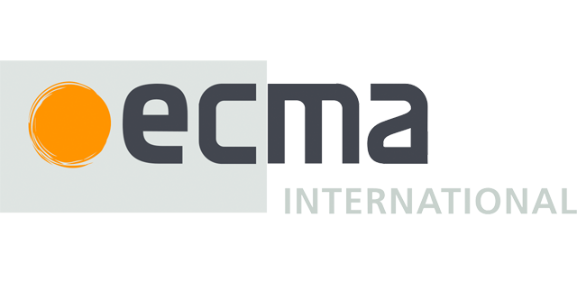
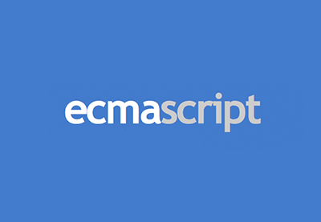

Введение в JavaScript. Стандарт ECMAScript
JavaScript - мультипарадигменный язык программирования. Поддерживает объектно-ориентированный, императивный и функциональный стили.
JavaScript - язык сценариев, или скриптов. Скрипт представляет собой программный код — набор инструкций, который не требует предварительной обработки (например, компиляции) перед запуском. Код JavaScript интерпретируется движком браузера во время загрузки веб-страницы. Интерпретатор браузера выполняет построчный анализ, обработку и выполнение исходной программы или запроса.
JavaScript поддерживает несколько встроенных объектов, а также позволяет создавать или удалять свои собственные (пользовательские) объекты. Объекты могут наследовать свойства непосредственно друг от друга.
История JS
События, в результате которых появился JavaScript, разворачивались в течение шести месяцев, с мая по декабрь 1995 года. Компания Netscape Communications уверенно прокладывала себе путь в области веб-технологий. Её браузер Netscape Communicator успешно отвоевывал позиции у NCSA Mosaic, первого популярного веб-браузера. Netscape была создана людьми, принимавшими участие в разработке Mosaic в ранние 90-е. Теперь, с деньгами и независимостью, у них было всё необходимое для поиска способов дальнейшего развития веб-технологий. Именно это послужило толчком для рождения JavaScript.
Основатель Netscape Communications и бывший участник команды Mosaic Марк Андриссен считал, что веб должен стать более динамичным. Анимации, взаимодействие с пользователями и другие виды интерактивности должны стать неотъемлемой частью интернета будущего. Веб нуждался в лёгком скриптовом языке (или языке сценариев — прим.ред.), способном работать с DOM, который в те дни не был стандартизирован. Существовало одно «но», являвшееся на тот момент серьёзным вызовом: этот язык не должен был предназначаться для крупных разработчиков и прочих людей, имевших отношение к инженерной стороне вопроса. Java в те дни уже активно развивалась и твёрдо заняла эту нишу. Таким образом, новый скриптовый язык должен был предназначаться для совершенно иной аудитории — дизайнеров. Очевидно, что веб был статичным, а HTML был достаточно молод и прост в освоении даже для тех, кто не имел ничего общего с программированием. Следовательно, всё, что должно было стать частью браузера и сделать веб более динамичным, должно быть максимально понятным для далёких от программирования людей. Из этого предположения родилась идея Mocha, который должен был стать тем самым простым, динамичным и доступным скриптовым языком.
Перед командой была поставлена задача подготовить работающий прототип в кратчайшие сроки. Sun Microsystems заканчивала работу над своим языком программирования Java, на тот момент называвшимся Oak, и Netscape Communications была уже готова заключить с компанией контракт, чтобы сделать Java доступным в своем браузере. Так зачем же понадобился Mocha (первое название JavaScript)? Зачем нужно было создавать абсолютно новый язык программирования при наличии готовой альтернативы? Дело в том, что Java не был предназначен для той аудитории, на которую ориентировался Mocha — скриптеры, любители, дизайнеры. Java был слишком большим и навороченным для того, чтобы выполнять эту роль. Основная идея заключалась в том, что Java должен был предназначаться для крупных разработчиков и профессиональных программистов, в то время, как Mocha должен был использоваться для небольших скриптовых задач. Другими словами, Mocha должен был стать скриптовым компаньоном для Java.
Проблема скорейшего выбора языка стояла как никогда остро. Возможными кандидатами были Python, Tcl и Scheme. Айк должен был действовать быстро. По сравнению с конкурентами у него были два преимущества: свобода в определении набора необходимых возможностей и прямая связь с заказчиком. К несчастью, имело место и очевидное неудобство: для принятия огромного количества важных решений времени практически не было. JavaScript, a.k.a. Mocha, был рождён именно в таких условиях. В течение нескольких недель был подготовлен рабочий прототип, который затем был интегрирован в Netscape Communicator.
То, что должно было стать аналогом Scheme для браузера, вылилось в нечто совершенно иное. Рукой Айка управляли необходимость закрыть сделку с Sun и сделать Mocha скриптовым компаньоном для Java. Синтаксис должен был быть максимально близким Java. Помимо этого, от Java была унаследована семантика для большого количества устоявшихся идиом. Таким образом, Mocha был совсем не похож на Scheme. Он выглядел, как динамический Java, под оболочкой которого скрывался гибрид Scheme и Self.
Прототип Mocha был интегрирован в Netscape Communicator в мае 1995 года. Через очень короткий промежуток времени он был переименован в LiveScript, так как в тот момент слово live выглядело очень привлекательным с точки зрения маркетологов. В декабре 1995 года сделка между Netscape Communications и Sun была закрыта: Mocha/LiveScript был переименован в JavaScript и преподносился в качестве скриптового языка для выполнения небольших клиентских задач в браузере, в то время, как Java был полноценным профессиональным языком программирования для разработки сложных веб-компонентов.
Первая версия JavaScript заложила все те фундаментальные особенности, которыми этот язык знаменит и поныне. В частности, его объектная модель и функциональные особенности уже присутствовали в первой версии.
Различные реализации
Когда Sun и Netscape закрыли сделку, и Mocha/LiveScript был переименован в JavaScript, встал ребром очень важный вопрос: что будет с конкурентами? Хоть Netscape и набирал популярность, становясь самым используемым браузером, Microsoft занималась активной разработкой Internet Explorer. С самых первых дней JavaScript показал настолько удивительные возможности в плане взаимодействия с пользователем, что соперничающим браузерам не оставалось ничего иного, кроме как в кратчайшие сроки найти готовые решения, представлявшие собой рабочие реализации JavaScript. В тот момент (и ещё достаточно долго после этого) веб-стандарты оставались достаточно слабыми. Поэтому Microsoft разработала свою реализацию JavaScript, назвав ее JScript. Убрав из названия слово Java, они смогли избежать возможных проблем с владельцами торговой марки. Однако, JScript отличался не только названием. Небольшие различия в реализации — в частности, подход к некоторым DOM функциям — оставили рябь, которая будет ощущаться ещё долгие годы. Бои за JavaScript шли на гораздо большем количестве фронтов, чем названия и таймлайны, и многие причуды этого языка появились благодаря им. Первая версия JScript появилась в Internet Explorer 3.0, увидевшем свет в августе 1996года.
Реализация JavaScript получила свое собственное название и в Netscape. Версия, выпущенная вместе с Netscape Navigator 2.0, была известна, как Mocha. Осенью 1996 года Айк переписал бóльшую часть Mocha, чтобы разобраться с техническими огрехами и недоработками, возникшими, как следствие спешки при разработке. Новая версия была названа SpiderMonkey. Это название используется по сей день в JavaScript-движке браузера Firefox, внука Netscape Navigator.
В течение нескольких лет JScript и SpiderMonkey были единственными движками JavaScript. Особенности обоих движков, не всегда совместимые, определили вектор развития веба на ближайшие годы.
Ecma International

Основанная в 1961 году ассоциация, деятельность которой посвящена стандартизации информационных и коммуникационных технологий. Изначально ассоциация называлась ECMA — European Computer Manufacturers Association, однако она сменила название в 1994 году в связи с глобализацией её деятельности. Вследствие этого название Ecma перестало быть аббревиатурой и больше не пишется заглавными буквами.
Ассоциация преследует три цели:
- Создавать (в сотрудничестве с организациями аналогичной направленности, но локального масштаба) стандарты и технические отчёты в порядке поддержки и стандартизации использования информационных и сетевых систем.
- Поощрять правильное использование стандартов путём влияния на контекст их употребления.
- Публиковать стандарты и технические отчёты в электронном и бумажном виде. Распространение документов должно быть бесплатно и неограниченно.
ECMA-262
JavaScript создавался как скриптовый язык для браузеров Netscape. Компания Microsoft также признала его потенциал и включила под именем JScript в Internet Explorer 3, обеспечив частичную поддержку стандартов языка, что привело в итоге к неразберихе со стандартами и версиями JavaScript. Поэтому Netscape, Microsoft и другие заинтересованные компании обратились в организацию ECMA (Европейская ассоциация производителей компьютеров), где была одобрена первая спецификация языка ECMA-262. В связи с тем, что название «JavaScript» являлось зарегистрированным товарным знаком, для нового стандарта было решено использовать ECMAScript (или сокращенно ES). ECMAScript изначально был разработан для использования в качестве языка сценариев, но позже стал широко использоваться в качестве языка программирования общего назначения.
В основу создания JavaScript была положена идея динамического управления объектами HTML-документов без перезагрузки текущей. Со временем возможности языка расширились.
Последующие версии JavaScript уже были основаны на стандарте ECMAScript. Проще говоря, ECMAScript — стандарт, а JavaScript — самая популярная реализация этого стандарта.
Мы получаем забавный факт: ECMAScript основан на JS, а JS основан на ECMAScript.
Что такое ECMAScript?

Спецификация, описанная в ECMA-262, для создания общего языка сценариев. Синоним: спецификация ECMAScript
Так как ECMA-262 – название стандарта, то оно представляет спецификацию языка сценариев ECMAScript. ECMAScript предоставляет правила, детали и руководящие принципы, которые должен соблюдать язык сценариев, чтобы быть совместимым ECMAScript.

JS – это общий язык сценариев, совместимый со спецификацией ECMAScript. Это диалект языка ECMAScript.
ECMAScript – спецификация, на которой он основан. Прочитав спецификацию ECMAScript, вы узнаете, как создать язык сценариев. Прочитав документацию JavaScript, вы узнаете, как использовать язык сценариев.
Когда люди говорят, что JS – диалект языка ECMAScript, они имеют в виду то же самое, что и для диалектов английского, французского или китайского. Диалект берет большую часть своей лексики и синтаксиса от родительского языка, но имеет достаточно много отклонений, чтобы считаться отдельным языком.
Структура JavaScript
Структурно JavaScript можно представить в виде объединения трёх чётко различимых друг от друга частей
- ядро (ECMAScript)
- объектная модель браузера (Browser Object Model или BOM)
- объектная модель документа (Document Object Model или DOM).
О JS-движках
JavaScript-движок — это программа, или, другими словами, интерпретатор, выполняющий код, написанный на JavaScript. Движок может быть реализован с использованием различных подходов: в виде обычного интерпретатора, в виде динамического компилятора (или JIT-компилятора), который, перед выполнением программы, преобразует исходный код на JS в байт-код некоего формата.
Разница в поддержке браузеров
Между людьми, говорящими на одном языке, есть различия. Даже если очень много людей говорят на английском, некоторые могут знать слова, выражения и синтаксис, который другие не знают, и наоборот. С браузерами все так же. Даже если движки JS всех браузеров понимают JS, некоторые браузеры понимают язык лучше других. Разница заключается в самом способе поддержки языка браузерами.
С точки зрения поддержки в браузерах люди обычно говорят о «совместимости с ECMAScript», а не о «совместимости с JS». Это может немного запутать, но на все есть свое объяснение.

Если вспомнить, то ECMAScript – спецификация языка сценариев. Релиз новой версии ECMAScript не означает, что все движки JS внезапно станут поддерживать эти новые функции. Все зависит от групп или организаций, ответственных за обновление движков JS до последней спецификации ECMAScript и применение изменений.
Поэтому разработчики, как правило, спрашивают «какую версию ECMAScript поддерживает этот браузер?» или «какие функции ECMAScript поддерживает этот браузер?» Они хотят узнать, удалось ли Google, Mozilla и Microsoft обновить движки JS браузеров – например, V8, SpiderMonkey и Chakra – до функций, описанных в последней спецификации ECMAScript.
Таблица совместимости ECMAScript ответит на эти вопросы.
Если выходит новая версия ECMAScript, движки JS не интегрируют все обновление разом. Они подключают новые функции ECMAScript постепенно.